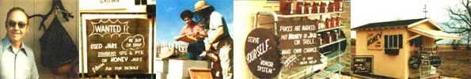

Travelers who take State Highway 53 through the southeast corner of Missouri slow down-and usually stop-when they see our sign: "FOR SALE : Pure, Natural Honey, Homegrown. Serve Yourself ... Make Your Own Change."
And, despite the crime reports that flood the media, our customers constantly prove that people are basically honest, that our world isn't "goin' to the dogs", and that the "honor system" is a great way to sell a product.
As you've probably guessed by now, my husband (Hank) and I are beekeepers ... but this isn't a how-to article on apiculture (there are plenty of books that do that job better than we could). We just want to share some of the joys of our particular lifestyle, so that other folks can benefit from what we've learned.
My husband and I have kept a few hives ever since the early years of our marriage, and-if a bad heart ailment hadn't forced Hank into an unexpected retirement-that might have been the extent of our love affair with bees.
That illness, however, forced us to take a hard look at our options. Should I, we asked ourselves, keep the security of my job as a school bookkeeper ... or was this the time for us to take a chance and embark upon our long-dreamed-of adventure: fulltime beekeeping?
Somehow, good judgment won out ... and-a little over a year ago-we moved to this fertile farm country of cotton, soybeans, and excellent bee pastures. And it wasn't long before our buzzing colonies had increased to their present number of 100-plus.
Because of my husband's condition, we had to keep our workload to a minimum, and Hank (who reads bee journals as faithfully as he reads MOTHER) learned that the "honor system" had worked for others in honey sales. We decided that this sales method-based upon trust-was the best route for us to take.
Fortunately, the land that we had purchased included a small building next to the highway, which was pretty easy to convert into a honey stand. This 8- by 12-foot structure advertises our "golden delight" . . . and houses our cases of bottled, labeled, and ready-for-market bee produce.
Each morning we fill up the shelves in front of our stand with honey, and every night we carry whatever's left back inside the building. A pain in the neck, you might say ... but these tasks require only 20 minutes of labor ... as opposed to the (at least) eight hours that" running" the stand would demand. We also refill the shelves on busy days, and occasionally "rob" the honor box (thereby removing temptation), but these few chores are the only work involved in our retail sales operation.
Even after a year of honor system business, it's still a thrill to watch people stop ... smile ... shake their heads in disbelief ... but almost always BUY! We're convinced that folks sometimes purchase our honey (whether they need it or not) just because the sheer novelty of our super-soft sales approach appeals to them.
Maybe our invitation to "honk if you need help" encourages honesty with the hint that watchful eyes are nearby, but we like to believe that most folks simply respect the fact that we trust them.
Whatever the reason, we'd never had more than small-change losses until a couple of months ago ... when, to our surprise, the till was short by $5.00! The missing money was bad enough in itself, but the thought that we might have to alter our sales system was even worse! After all, we were used to being free all day to work in the shop or with the bees, to garden, to run errands, or simply to rest. Until that shortage showed up, our tiny losses hadn't ever added up to enough to justify the long hours that would be spent if we actually "tended shop".
Happily, the whole matter was cleared up a few days later. We were enjoying a chat with some customers when one of them glanced at a birdhouse that hangs from a corner of the honey stand. He walked closer and peered inside.
"Did you know that there's money in there?" he asked.
The missing $5.00 had been poked (we don't know why or how) into the entrance hole of the little birdhouse. We retrieved the cash and our faith was restored.
While strangers "passin' through" are often good for a jar or more of honey, our real security lies in repeat sales to our local population. To increase that business, we've adopted some "tricks" that are beneficial to both buyer and seller.
For one thing, since glass jars are one of our biggest expenses, we've posted a sign offering to pay cash for used containers . . . and we give people an even better deal when they trade 'em in for honey. This encourages return visits and creates new customers!
And, as another "gimmick", we give away small jars of honey on the slightest occasion. For example, when a new bank held Its "open house" in a nearby town last week, we presented a token "gift" to each employee. Good advertising? Goodwill? Sure! And we can certainly use plenty of both!
Some of our "liquid gold" also goes for shower, birthday, and anniversary presents. Once again, this provides us with "free" advertising while preserving our supply of ready cash. And we often barter jars of honey for Items that we need but can't afford. All of these methods, of course, let people know about our business ... and when they know we're here, folks will often stop in to buy!
For the first time in our lives, my husband and I have an occupation that allows us to share ideas with complete strangers ... and these people often become our great friends.
We have families that regularly travel all the way from Louisiana to purchase several gallons of honey for themselves and their friends, as well as a couple from Florida who are always glad to swap their palmetto honey for our soy
bean/cotton nectar. Another of our "regulars" is a young minister who buys his honey in 60-pound tins and swears that his whole family thrives on it. (Since the Reverend's family seems to have expanded each time we see him, Hank laughs and tells him, "You might better get off the honey for a while."
Another man buys beeswax from us and sells it to trappers ... who dip their traps into hot water with a layer of the melted wax floating on top. Our friend tells us that-besides being a durable coating for rust prevention-the wax has a natural scent and doesn't alert the animals.
Bees are a conversation piece in themselves, too. Practically all of our customers are curious about our work ... I guess they just can't fathom anyone being stung 20 (or more) times a day and still "hangin' in there". And, without exception, people can't seem to believe that we trust our money to any "king-of-the-road" who might happen by ... or, especially, that we seldom lose a dollar doing business this way!
We've tried to figure just how many hours we spend earning our supplementary income-if for no other reason than to help you potential beekeepers who have an outside job that limits your time-but it's difficult to come up with an accurate estimate.
In the spring, for instance, we often stop off on the way to and from some of our hives to gather wild greens, mushrooms, or cattails. Maybe we'll even dig up a wild flower to transplant in our yard, or spend an hour in conversation with the owners of the field where our hives sit. On the first warm days of early summer, much of our time might be spent in search of swarms, and in the fall or winter we bring back firewood and gather black walnuts or pecans.
Not much of this time can be directly attributed to beekeeping ... nor, in our case, can any of these activities be separated from our job. They're just part of our way of life ... of the way we create our happiness and earn our livelihood.
Though bees themselves aren't demanding critters, occasional visits to the various yards are always necessary to check for damage caused by vandals, varmints, or wind. (High winds can wreak havoc on our insects' modest abodes. And, when this occurs, the bees are usually angry enough to warrant our wearing full-dress uniform ... complete with bee veils, gloves, and smokers.)
These "emergencies" seldom happen, though. Mostly, a visit involves little more than a routine visual check of the landing board while we watch for the indications of a happy, active hive. (We know, for instance, that the queen is there if the workers are busy carrying pollen to feed her brood.)
Of course, there are busy periods, These begin in early January when we check each hive's food stores. Sometimes a colony runs low and must be fed. We always check them a few weeks after that initial "inventory", too, and place antibiotic patties between each hive's two bodies ... to lessen the chances of disease.
And, by the first of May, when our new "mail-ordered" queen bees arrive, our labors begin in earnest. It's then that in order to increase our colonies-we have to separate the old hives and take a few frames of brood and honey from them to start new ones. We place a new queen in with each nucleus ... and hope all goes well.
Stings? Sure, we almost always get a few, and sometimes we even wonder if beekeeping is really a magic formula for the "good life". But, after the rush of spring chores, it's time to prepare for the honey flow that will begin once our bees have used the early production to feed their increasing numbers ... and we always become re-convinced that we've chosen our occupation well.
Then, come autumn, we spend several weeks extracting the honey from our hives. The nectar is carefully stored in 60-pound capacity buckets ... which only cost us about a dollar apiece at the local quick-food restaurants and can be used over and over again.
All of these chores-plus bottling and labeling- make up the bulk of our duties.
We figure that-between us-Hank and I spend an average of eight hours a day on one phase or another of bee craft. But Hank says (and I agree) that one good man could do what we both do in about half the time.
However, now that our equipment is about at the level we want-and the hive population is large enough to supply our highway stand's demands-we don't plan to increase any further. Consequently, our business will require less time and money in the future.
Sales at our honey stand have averaged about $100 per week, which should be almost clear profit from now on ... since wax from discarded combs (which we sell to bee supply houses) will just about keep us in supplies and replacement parts.
Because our highway is not a major thoroughfare, we don't anticipate much increase in sales volume, though many folks-who have "busier" locations-sell much more honey than we do. We know of one man who produces 10,000 pounds of honey each year, for instance, and has to buy more from fellow beekeepers to keep his stand supplied. Another acquaintance in the business peddles his honey to fruit markets and fairs ... and yet another beekeeper sells the 5,000 pounds that his insects produce annually to a food co-op.
We're perfectly happy with our little business, though. Our labor is limited to only that which is required, and the exercise, fresh air, and sunshine-in fact, the whole wondrous world of nature-provide us with medicine that no doctor could prescribe.
We often compare our life now with what-might-have-been: If I had stayed with my job-had hung on to that little shred of security-we would never have known the fulfillment of our dream. (And a disabled husband-all alone all day with no goals or challenges to look forward to-wouldn't exactly have been in paradise, either!)
Maybe we don't have much money, but, though our business isn't a quick road to financial abundance, it's sufficient to meet our modest needs. And we haven't allowed illness to dictate all of the rules or stifle all of our desires.
So far, at least, we've made it work. How? Because there is honor in the world ... as well as human kindness and people who love.
A forced retirement can be a tragedy ... but for Laura and Hank Baker it became the fulfillment of an old dream ... and much, much more!
|
 |
|
|